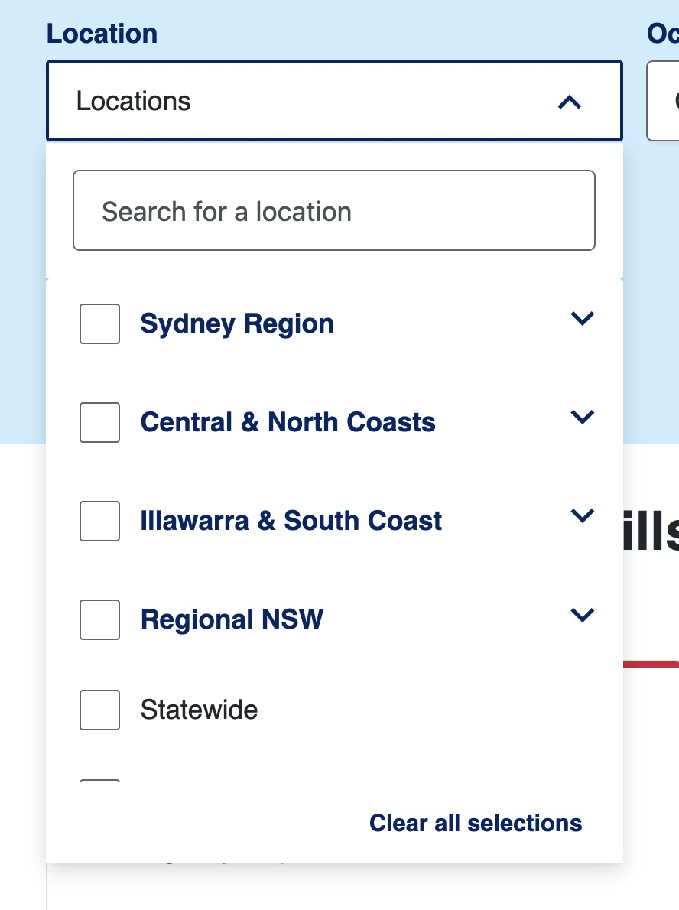
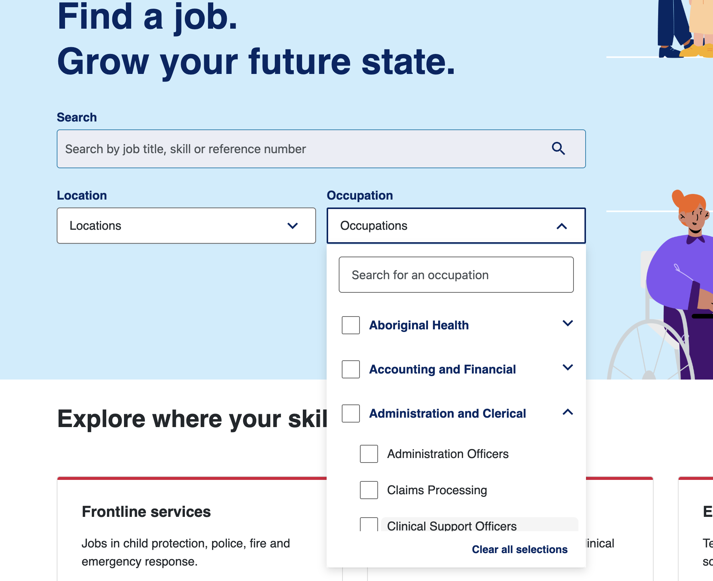
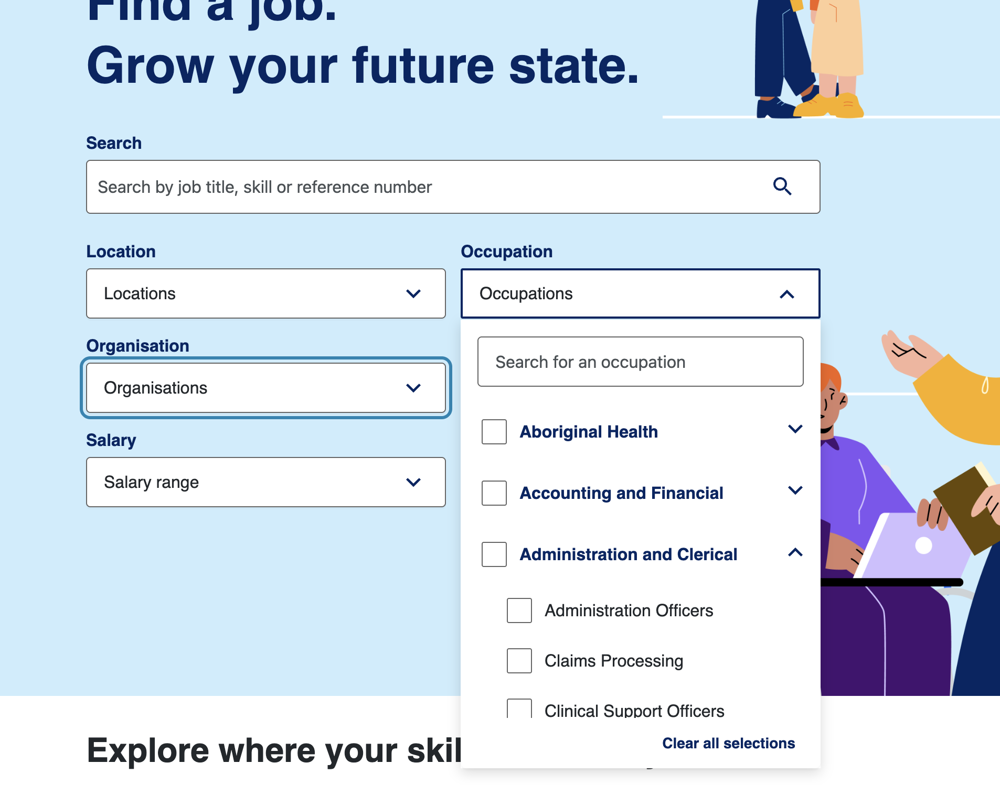
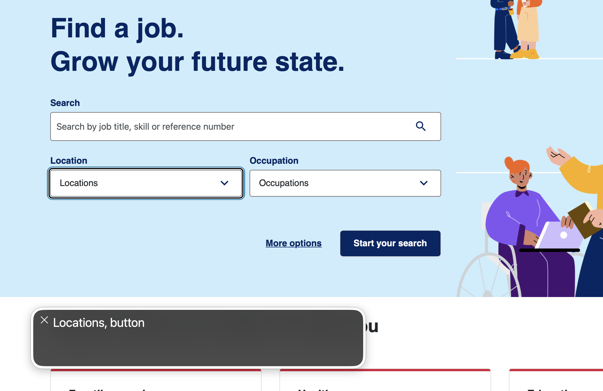
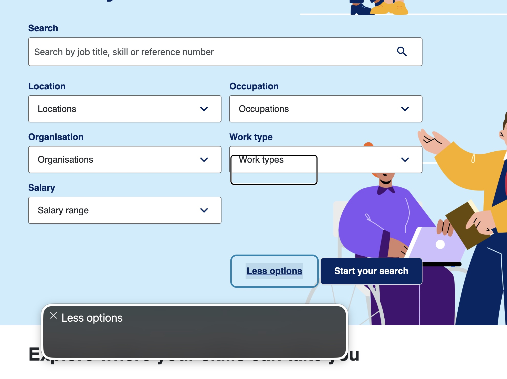
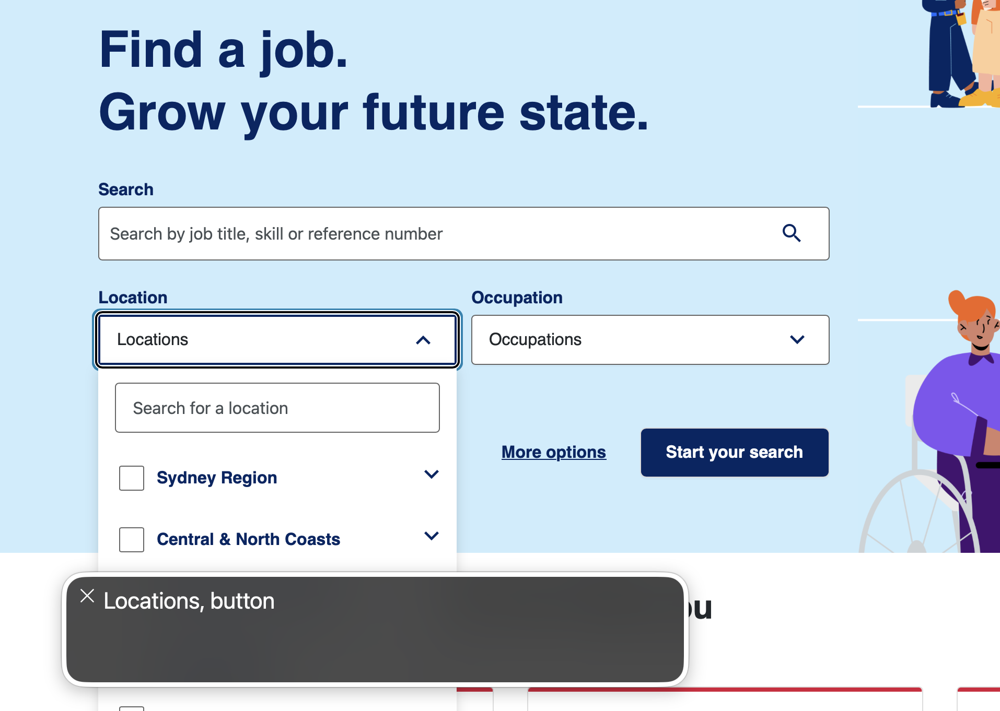
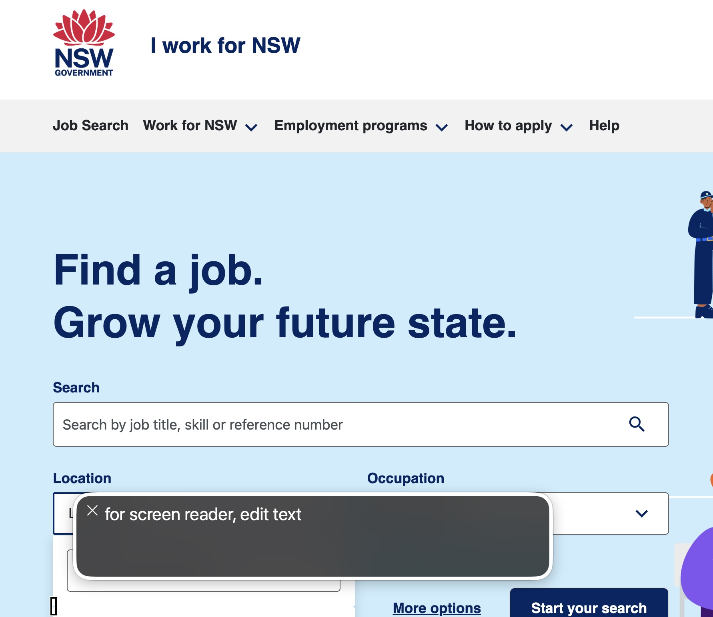
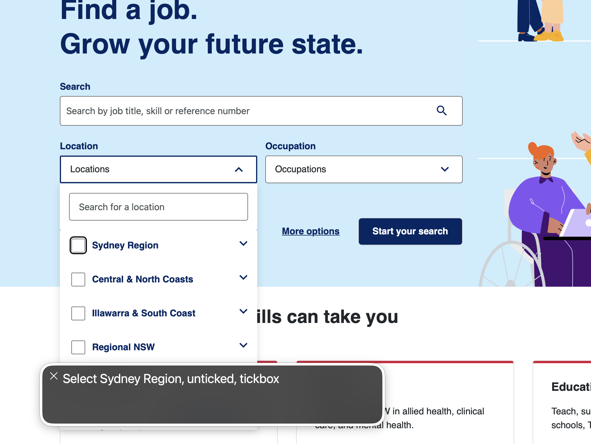
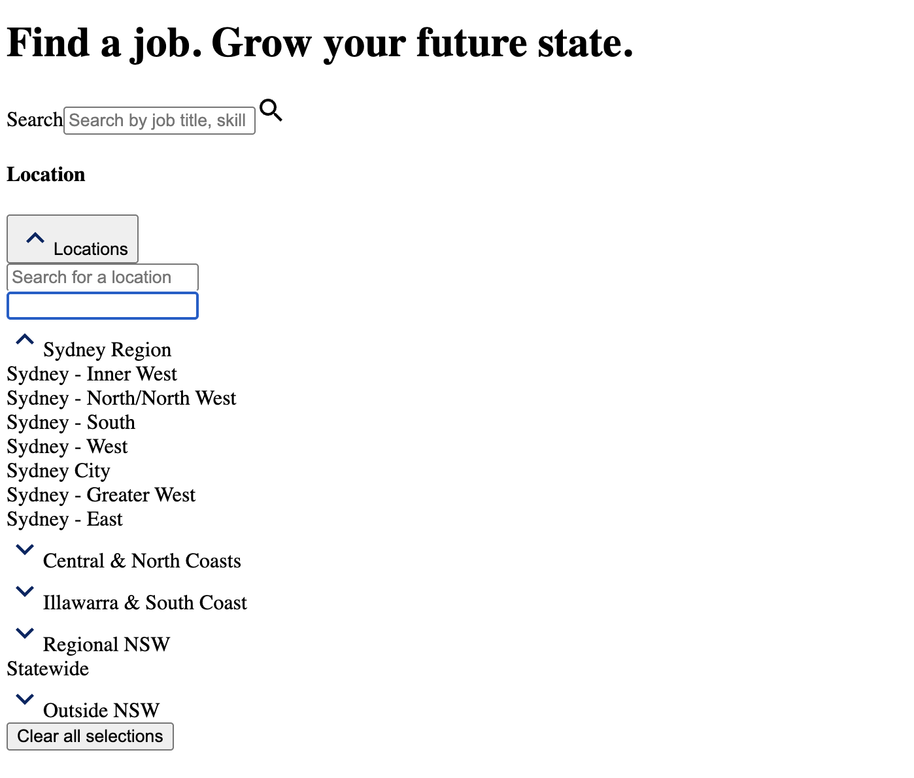
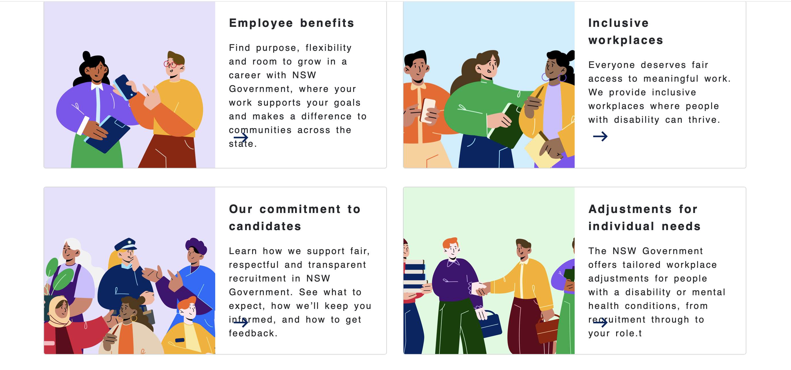

Case study · WCAG 2.2 AA · WCAG-EM
Accessibility audit: I Work for NSW
An independent evaluation of the homepage of the NSW Government’s public jobs website. I identified 25 issues, and found that most of them trace back to just two root causes.
Context
“I Work for NSW” is the NSW Government’s public jobs platform, used by people across the state to find and apply for government roles. As a public service, it needs to work for everyone, including the many job seekers with a temporary or permanent disability who rely on assistive technology. I chose it for an independent evaluation: to test the homepage against WCAG 2.2 Level AA and to practise the full audit process from planning to reporting.
Approach
I evaluated the homepage following the WCAG-EM methodology, combining manual and automated testing:
- Keyboard testing: reaching and operating every interactive element with the keyboard alone.
- Automated and tool-assisted checks: WAVE, Web Developer, Lighthouse and axe DevTools, plus manual checks with CSS disabled, text enlarged, and increased text spacing.
- Screen-reader testing: VoiceOver in Safari on desktop (macOS) and on iPhone (iOS), with a Chrome spot-check on desktop.
For every issue I wrote a practical fix recommendation, drawing on my front-end development background. I used AI to support the process where it helped, and carried out the testing and judgement myself.
What I found
The homepage has a solid foundation: a clean layout, inclusive content, and accessibility basics such as skip links, landmarks and image alternatives already in place. However, it does not yet meet WCAG 2.2 Level AA. I identified 25 issues, and most of them trace back to just two root causes.
Two root causes behind most issues
- The visible focus indicator has been removed across the whole site. Keyboard users cannot see where they are on the page.
- The search dropdowns are custom-built without proper semantics. The “Find a job” dropdowns lack the roles, states and keyboard support that assistive technology relies on.
For example, in the location filter, VoiceOver announces “Sydney Region” only as an unticked checkbox, with no indication that it can be expanded and no way to reach its sub-regions. A screen-reader user can select a whole region, but not an individual area. The same form cannot be fully operated by keyboard, and the mobile menu cannot be opened by keyboard at all. This is the single critical issue.
Selected findings
| ID | What’s wrong | WCAG 2.2 | Severity |
|---|---|---|---|
| H-10 | The mobile hamburger menu can’t be reached or opened by keyboard, so none of the navigation is available in the mobile layout. | 2.1.1 Keyboard (A) | Critical |
| H-06 | No visible focus indicator on the header links, so a keyboard user can’t tell which item they’re on. | 2.4.7 Focus Visible (AA) | Serious |
| H-05 | In the search dropdowns, the arrow keys scroll the whole page instead of moving through the options. | 2.1.1 Keyboard (A) | Serious |
| H-16 | “Sydney Region” is expandable for sighted users but not for screen readers, so sub-regions can’t be reached. | 4.1.2 Name, Role, Value (A) | Serious |
| H-21 | Card text overflows its fixed-height box and overlaps the arrow icon when users increase text spacing. | 1.4.12 Text Spacing (AA) | Moderate |
A fix in practice
Root cause one is a good example of high impact for very little work. On the live site, the focus indicator is deliberately switched off. This is the actual rule responsible:
Before: the real code that hides focus
.root-layout a:focus-visible,
.root-layout a:focus {
outline: none !important;
}After: a clear, visible focus style
.root-layout a:focus-visible {
outline: 3px solid #0a5666;
outline-offset: 2px;
border-radius: 3px;
}Removing that outline: none !important rule and defining a visible focus style instead restores the focus indicator across the whole site and resolves a group of findings in one change. (It’s the same approach used on this very page, so try tabbing through it.)
Evidence
Screenshots captured during testing. Select any image to open it full size in a new tab.

Moving through the option list by keyboard, no focus indicator is visible, so you can’t tell which item you’re on.
Open full size

The list doesn’t scroll to keep the focused option in view, so options below the visible area can’t be reached by keyboard.
Open full size

Focus leaves the open dropdown and lands on the next field while the dropdown stays open.
Open full size

The control is announced only as a plain ‘button’, not as an expandable combobox, and with no open or closed state.
Open full size

VoiceOver announces only the changed label ‘Less options’, not that the section expanded, and the new fields appear before the button, so they’re easily missed.
Open full size

Opening the dropdown announces nothing, so a screen-reader user gets no signal that a list has appeared.
Open full size

VoiceOver lands on an empty ‘for screen reader’ element, a confusing stop that conveys no purpose before the options.
Open full size

‘Sydney Region’ can be expanded for sighted users, but that’s never exposed to screen readers, so its sub-regions can’t be reached.
Open full size

With CSS off, no real checkboxes appear; the selection controls aren’t native form elements, so they can’t be used.
Open full size

With increased text spacing, card text overflows its fixed-height box and overlaps the arrow icon.
Open full size
Recommendation
I’d start with the two root causes, because fixing them resolves a large share of the findings at once:
- Restore a clear, visible focus style site-wide. A small change with high impact: it addresses the focus-visibility issues in a single step.
- Rebuild the “Find a job” form and its dropdowns using standard, accessible patterns (the ARIA Authoring Practices combobox and tree patterns). This fixes most of the keyboard and screen-reader findings, roughly a third of the issues overall.
Next steps
This evaluation focused on the homepage. As a next step, I would apply the same process to the other key pages (search results and a job advertisement) and re-verify the screen-reader findings in a second screen reader such as NVDA, to confirm they are not specific to VoiceOver.
Read the full report
All 25 findings with steps to reproduce, plus the complete WCAG 2.2 checklist, are available to download:
Independent, point-in-time evaluation for portfolio purposes. Not commissioned or endorsed by the site owner; findings reflect the homepage as tested in June 2026.